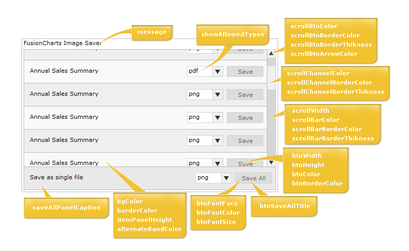

| Component UI Customization |
As we've already seen earlier, the Export Component UI has two modes:
|
| In both modes, you can customize the colors, fonts and titles of export component. Before we get into the attributes that actually does this, let's first quickly look at what the various elements of the Export Component are. The following diagram highlights the important elements: |
|  |
| Configuration attributes |
To configure any of the attributes of Export Component, the same needs to be specified in JavaScript (where the Export Component has been initialized). An example code is shown below: <div id="fcexpDiv" align="center">FusionCharts Export Handler Component</div>
<script type="text/javascript">
var myExportComponent = new FusionChartsExportObject("fcExporter1", "../../Charts/FCExporter.swf");
//Customize the component properties
//Width and height
myExportComponent.componentAttributes.width = '400';
myExportComponent.componentAttributes.height = '60';
//Background color
myExportComponent.componentAttributes.bgColor = 'ffffdd';
//Border properties
myExportComponent.componentAttributes.borderThickness = '2';
myExportComponent.componentAttributes.borderColor = '0372AB';
//Font properties
myExportComponent.componentAttributes.fontFace = 'Arial';
myExportComponent.componentAttributes.fontColor = '0372AB';
myExportComponent.componentAttributes.fontSize = '12';
//Message - caption of export component
myExportComponent.componentAttributes.showMessage = '1';
myExportComponent.componentAttributes.message = 'Export the chart first, and then click on this button to save';
//Button visual configuration
myExportComponent.componentAttributes.btnWidth = '200';
myExportComponent.componentAttributes.btnHeight= '25';
myExportComponent.componentAttributes.btnColor = 'E1f5ff';
myExportComponent.componentAttributes.btnBorderColor = '0372AB';
//Button font properties
myExportComponent.componentAttributes.btnFontFace = 'Verdana';
myExportComponent.componentAttributes.btnFontColor = '0372AB';
myExportComponent.componentAttributes.btnFontSize = '15';
//Title of button
myExportComponent.componentAttributes.btnsavetitle = 'Save the chart'
myExportComponent.componentAttributes.btndisabledtitle = 'Waiting for export';
//Render the exporter SWF in our DIV fcexpDiv
myExportComponent.Render("fcexpDiv");
</script> |
|
See a similar example live! As you can see above, we've specified various parameters for export component. This is done in the following syntax: Component_Instance.componentAttributes.Parameter_name = 'Value'; Example: myExportComponent.componentAttributes.width = '400'; Click here to see the list of attributes that can be customized for this component. |